The complete administrator's guide to Security Automation Manager.
Roll out Content Security Policy as a controlled workflow, configure the nine simpler header pillars alongside it, automate TLS certificates via ACME, and understand which automation is free and which requires a subscription.
The very first time any WordPress user opens Security Automation Manager, the plugin shows a one-page Welcome screen before anything else. It asks four short questions -- your relationship to the site, how familiar you are with security, how much technical detail you want to see, and what you'd like the plugin to show you first -- and nothing on it is a security setting. Saving or skipping this page only changes what that one WordPress user sees; it never changes how the site is protected, and every existing control keeps whatever state it already had.
The Welcome page is fully skippable -- click Skip for now and the plugin defaults to the Balanced presentation and an overall-status landing view, with no assumptions made about your role or experience. It never reappears automatically once you've saved or skipped it, and it never blocks access to anything else in the plugin.
These preferences are personal, not site-wide: they're stored against your own WordPress user account, so two administrators on the same site can each see the same underlying evidence presented differently -- one in Simple mode, one in Technical mode -- without affecting each other or the site's actual configuration.
Relationship to the site -- own or manage the business, administer the site, develop it, create or edit content, or manage websites for clients. Only affects wording and emphasis, never access.
Security familiarity -- new to it, comfortable with the basics, experienced, or specialist. Controls how much explanatory text accompanies each result; never hides a warning.
Presentation depth -- Simple, Balanced (the default), or Technical. See Your Home page below.
What to see first -- overall status (the default), items needing attention, recent activity, protection status, or a technical overview. Only changes ordering and emphasis on the Home page -- a critical item is always shown first regardless of this choice.
Change any of these answers at any time from the Personal Preferences link shown near the top of Settings, Observe, Decide, Control, and Verify -- it opens the same four-question page you saw on first visit, with your current answers pre-selected.
Presentation only
Nothing on the Welcome page or its Personal Preferences editor is a security-control toggle, an automation setting, or a policy or certificate configuration. Those all remain exactly where they've always been -- on Settings, Observe, Decide, Control, Verify, and each pillar's own page.
The new recommended first-use journey
Answer the Welcome page (or skip it) -> glance at the Home page's scorecard and Protection Status to see where the site stands today -> open the Action Centre if anything Needs Attention -> only then, if you're rolling out CSP for the first time, follow First 30 minutes below.
Your Home page
The scorecard, Recent Activity, Protection Status, and Action Centre.
Security Automation Manager -> Settings (the default landing page) now leads with four things, shown above the Overview/Getting Started/Security Health/Action Centre/Recommendations tab bar described throughout the rest of this guide. None of it is new evidence or a new decision -- it's the same evidence you'd otherwise find scattered across those tabs, brought to the front and explained in plain language.
The Security Scorecard
Three clickable tiles answer "how is my site doing?" with factual counts, not a synthetic score out of 100:
Protected
Controls that are actively enforcing right now -- CSP in Enforce mode, Traffic Controls blocking or rate-limiting, and so on.
Learning
Controls collecting evidence or monitoring without yet enforcing -- a report-only CSP surface, Traffic Controls in observe mode, a certificate mid-issuance.
Needs attention
Items that need a decision or review right now. Click this tile to open the Action Centre.
A control that's intentionally not configured -- a TLS certificate you manage outside the plugin, for example -- is never counted as a failure, and never inflates the Protected count either. It simply doesn't appear in any of the three tiles.
Recent Activity
A short strip beneath the scorecard shows what SAM has actually been doing in the last 24 hours:
Detections -- every detector match across every source in the window. This is deliberately labelled "Detections," not "requests": a single request that matches more than one detector adds one detection per detector, and no store anywhere in this plugin keeps a reliable total count of every request it has ever seen -- so rather than show an approximate or misleading number, that total is left out entirely.
Blocked or rate-limited -- how many sources Traffic Controls is currently blocking or throttling right now, not a running total.
Security changes detected -- configuration changes newly found against your captured baseline in the last 24 hours.
Protection Status
A table translating five areas of the plugin's evidence into one consistent, plain-language vocabulary -- the same six words everywhere, never colour alone:
Status
Meaning
Protected
Actively enforcing for this area.
Learning
Collecting evidence in a report-only or observation mode.
Monitoring
Watching traffic or behaviour without yet enforcing.
Needs attention
Something here needs your review or a decision.
Not in use
Deliberately not configured -- for example, TLS certificates when your host manages them instead. Never treated as a failure.
Unavailable
The underlying capability can't run in this environment right now -- for example, certificate automation when a required PHP extension is missing from the server. Different from "Not in use": this isn't a choice, it's an environment limitation.
The five areas covered are browser and content protection (CSP), malicious traffic (Traffic Controls), scripts and dependencies, configuration integrity (Baseline & Drift), and the TLS certificate. Each row has its own "Technical details" disclosure with the exact underlying evidence -- open by default if your presentation depth is Technical, and one click away otherwise.
Action Centre
Clicking the Needs Attention tile, or the "Review now" link under it, opens a consolidated Action Centre tab -- one list, gathered from across the plugin, so you never have to work out which subsystem an issue actually lives in. Each item explains what was found, why it matters, what SAM recommends, and what will happen if you act on it, with a link through to full evidence and controls.
The Action Centre does not replace the existing Recommendations tab, or any of the plugin's technical review interfaces (CSP's For Review and Policy Changes tabs, Baseline & Drift, Scripts, Certificates, and so on) -- it reuses exactly the same underlying Recommendations Engine and evidence those pages already show, presented as one prioritised list instead of requiring you to check each page in turn. The Recommendations tab, and every technical page it and the Action Centre link out to, still works exactly as described elsewhere in this guide.
Simple, Balanced, and Technical
Your presentation depth (set on the Welcome page or Personal Preferences) controls how much technical detail is visible by default on the Home page -- it never controls what's true, only how much of the underlying evidence you see without an extra click:
Simple
Leads with whether the site is protected, what needs attention, and what to do next. Technical names (like "Content Security Policy (CSP)") are still shown, just de-emphasised, and every "Technical details" disclosure is one click away, never removed.
BalancedDefault
Plain-language outcomes alongside the technical terminology that helps you recognise what's being described, with the same one-click access to deeper evidence.
Technical
The same information, with every "Technical details" disclosure already expanded -- the exact store, field, and value behind each row, with no extra clicks.
Whatever your depth or familiarity setting, critical warnings and the consequence of any recommended action are always fully visible -- Simple mode means less technical presentation, not less visibility of risk.
First 30 minutes
The shortest safe path for CSP.
Content Security Policy exists to stop cross-site scripting (XSS): the attack where a vulnerable plugin, a compromised ad network, a hijacked third-party script, or even an unescaped comment field gets its own JavaScript running on your site, indistinguishable from your own code once it executes. A correctly enforced policy tells the browser exactly which scripts, styles, fonts, and other resources this site is allowed to load -- anything else, including a script an attacker manages to inject directly into the page, is refused by the browser itself rather than caught after the fact. Everything below is about building that allowlist safely: wide enough that the site keeps working, narrow enough that an injected script has nowhere left to run.
Install and activate the plugin.
On your first visit, answer or skip the Welcome page -- presentation preferences only, not a security setting.
From Security Automation Manager -> Settings, open Security Automation Manager -> CSP in the WordPress admin.
Confirm all profiles are in report-only mode.
Run a manual scan.
Open the For Review tab and review pending sources.
Browse important site journeys while report-only remains active.
Review the Violations tab and approve only required sources.
Wait for the configured violation-free window before enforcing a surface.
This 30-minute path is specific to CSP, the plugin's most involved pillar. The other nine pillars (X-Frame-Options, X-Content-Type-Options, Referrer-Policy, Permissions-Policy, Strict-Transport-Security, Cache-Control, Information Masking, Cross-Origin-Resource-Policy, X-Permitted-Cross-Domain-Policies) don't have a rollout workflow at all; Cross-Origin-Opener-Policy and Cross-Origin-Embedder-Policy have a narrower one of their own -- a per-surface Report-Only mode with a violation-evidence table, but no discovery or automation -- see the other eleven pillars below.
What success looks like
The site works as before, the dashboard shows known sources, and the policy decisions are explainable.
What not to do
Do not approve every host just to clear the table. That turns CSP into a long allowlist with little value.
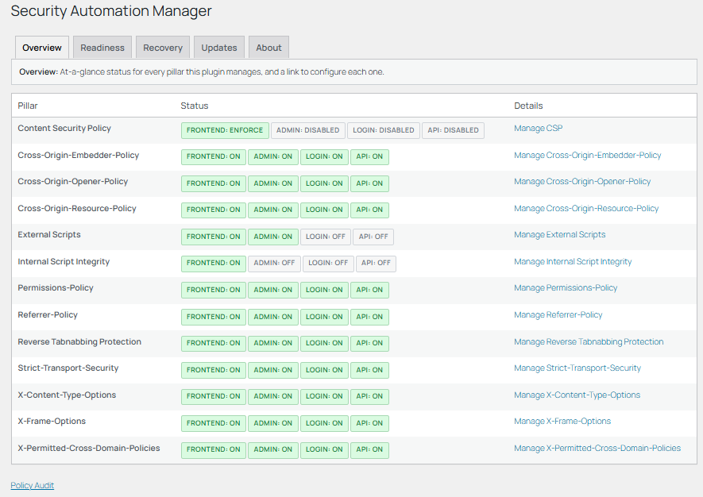
The Overview tab (Security Automation Manager -> Settings), reached below the scorecard and Protection Status described in Your Home page -- still the detailed, per-pillar status view, with a "Manage" link to each one. This screenshot predates 2.10.0's Home experience and is pending a refresh; see Your Home page for what actually appears above it now.
How it works
Twelve pillars, one dashboard.
Security Automation Manager automates rollout of twelve HTTP security headers. Configuration, reporting, and the decision engine are shared plumbing; Content Security Policy is the most capable pillar built on top of it, with a conservative loop: start in report-only mode, collect evidence, propose changes, require administrator decisions, then enforce only when the promotion gate is satisfied. The other nine pillars are simpler by design -- no report-only mode, no discovery workflow, and no automation. Each one either sends its configured header value or doesn't; there's nothing to learn before it takes effect. Cross-Origin-Opener-Policy and Cross-Origin-Embedder-Policy sit in between: still no discovery workflow or automation, but each has its own Report-Only mode to observe violations before enforcing.
flowchart TD
FirstVisit["First-ever visit to any SAM admin page, this WordPress user"] -.->|"redirected once"| Welcome["Welcome / Personal Preferences not in the sidebar -- presentation only, skippable"]
Welcome -.->|"Save or Skip"| Menu
Menu["Security Automation Manager left-hand admin menu"] --> Settings["Settings default landing page -- scorecard, Recent Activity, Protection Status & Action Centre preview above the tabs"]
Menu --> Observe["Observe"]
Menu --> Decide["Decide"]
Menu --> Control["Control"]
Menu --> Verify["Verify"]
Settings -.->|"Personal Preferences link"| Welcome
Settings -.->|"Needs Attention tile / Action Centre tab"| ActionCentre["Action Centre tab on Settings -- consolidates Recommendations + CSP review queue + dependency review"]
Settings -.->|"Manage CSP"| CSP["CSP tabbed dashboard -- not in the sidebar"]
CSP --> T1["Start Here"]
CSP --> T2["Profiles"]
CSP --> T3["For Review"]
CSP --> T4["Policy Changes"]
CSP --> T4b["Policy Audit"]
CSP --> T5["Violations"]
CSP --> T6["Scan Log"]
CSP --> T7["Settings"]
Settings -.->|"one Manage link per row"| Pillars["11 simple header pillars -- not in the sidebar X-Frame-Options · X-Content-Type-Options · Referrer-Policy Permissions-Policy · Strict-Transport-Security · Cache-Control Information Masking · Cross-Origin-Resource-Policy Cross-Origin-Opener-Policy · Cross-Origin-Embedder-Policy X-Permitted-Cross-Domain-Policies"]
Settings -.->|"Manage"| RTScr["Reverse Tabnabbing, Scripts -- not in the sidebar see Content rewrite protections below"]
Settings -.->|"Manage"| Certs["Certificates -- not in the sidebar"]
Observe -.-> ContInt["Continuous Intelligence not in the sidebar -- not yet covered in this guide"]
Control -.-> Traffic["Traffic Controls not in the sidebar -- not yet covered in this guide"]
Verify -.-> Baseline["Baseline & Drift not in the sidebar -- not yet covered in this guide"]
Verify -.-> AdvInt["Advanced Intelligence not in the sidebar -- not yet covered in this guide"]
The real WordPress admin menu, for orientation. Only Settings, Observe, Decide, Control, and Verify appear in the left-hand sidebar. Every other page this plugin registers -- CSP, every header pillar, Certificates, Welcome / Personal Preferences, and more -- is deliberately hidden from the sidebar and reached only by clicking a link from Settings (a "Manage" link from the Overview tab, the "Personal Preferences" link, or the Action Centre tab) or a task-relevant link from Observe/Decide/Control/Verify, never by finding it in the menu directly. Every hidden page still works by direct URL if you already know its slug. Reverse Tabnabbing and Scripts aren't header pillars, but they share the same hidden-page mechanism -- see Content rewrite protections below.
1. Initialise safely
Activation creates the local tables and default per-surface policy profiles for every pillar. New CSP profiles start in report-only mode so the browser can report potential blocks without breaking the site.
2. Build evidence (mostly CSP)
The scanner discovers static sources from rendered pages and linked CSS. Real browser journeys supply runtime evidence through CSP violation reports. Cross-Origin-Opener-Policy and Cross-Origin-Embedder-Policy build a narrower evidence table of their own, from their own Report-Only mode.
3. Decide deliberately (CSP only)
New CSP sources remain pending until an administrator approves them. Rejections and reversions are recorded so repeated unwanted proposals can be suppressed.
4. Emit each header
The CSP policy builder combines the surface profile, approved sources, active hashes, reporting endpoint, and per-request nonces. The other pillars emit their configured value directly, per surface -- Cross-Origin-Opener-Policy and Cross-Origin-Embedder-Policy also check whether that surface is set to Report-Only or Enforce first.
5. Promote one surface (CSP only)
Before CSP enforce mode is allowed, the promotion gate checks approved inventory, recent violations, and temporary override state for that specific surface.
6. Keep learning (CSP only)
Material site changes reopen the CSP learning window. The daily scheduler keeps scans, stale hashes, report retention, and notifications moving.
Important boundary
The plugin does not decide that a third-party host is trustworthy. It shows evidence and risk context so the site owner or administrator can make a controlled policy decision.
Operating model diagram
The full CSP sequence diagram is deliberately detailed and is better viewed in its own browser tab rather than embedded in this guide.
The CSP Profiles tab (Security Automation Manager -> CSP -> Profiles), where each surface's mode is set.
Core concepts
The terms you need to understand.
Most of these terms are specific to CSP -- the other eleven pillars don't have promotion gates or suppression, and nine of the eleven don't have report-only modes either; Cross-Origin-Opener-Policy and Cross-Origin-Embedder-Policy are the exception, with their own narrower report-only mode.
Surface
A part of the site with its own policy. Every pillar uses the same four: frontend, admin, login, and API.
Pillar
One of the twelve HTTP security headers the plugin manages: Content Security Policy, X-Frame-Options, X-Content-Type-Options, Referrer-Policy, Permissions-Policy, Strict-Transport-Security, Cache-Control, Information Masking, Cross-Origin-Resource-Policy, Cross-Origin-Opener-Policy, Cross-Origin-Embedder-Policy, X-Permitted-Cross-Domain-Policies.
Report-only mode
The browser reports what would have been blocked without blocking it. CSP, Cross-Origin-Opener-Policy, and Cross-Origin-Embedder-Policy all support it; the other nine pillars don't.
Enforce mode
CSP blocks resources that are not allowed by the policy. Cross-Origin-Opener-Policy and Cross-Origin-Embedder-Policy have their own Enforce mode too, sending the header to actively isolate or block rather than just report.
Directive
A CSP rule area, such as script-src, img-src, connect-src, or form-action.
Source
A host, scheme, or keyword that a CSP directive allows.
Nonce
A random per-request value used to authorise WordPress-managed inline scripts or styles without using 'unsafe-inline'.
Violation
A browser report showing that a resource did not match the current CSP policy.
Reporting endpoint
The URL browsers use for CSP reports. It defaults to this site's REST endpoint and can be overridden for proxy, CDN, or load-balanced public HTTPS hosts.
Promotion gate
A safety check that must pass before a CSP surface can move from report-only to enforce mode.
Suppression
A decision that stops the same rejected or reverted CSP source fingerprint being proposed again automatically.
Automation mode
How much CSP change review a surface skips automatically, from Manual up to Fully Automatic. See Automation tiers.
Installation
Install the plugin.
Requirements
WordPress 6.4 or later.
PHP 8.1 or later.
Administrator access to the WordPress admin.
Install from a release ZIP
Download the release ZIP from GitHub Releases.
Go to Plugins → Add New Plugin → Upload Plugin.
Select the ZIP file, install, and activate.
Manual upload
Extract the release ZIP locally.
Upload the security-automation-manager folder to /wp-content/plugins/.
Activate it from Plugins → Installed Plugins.
Every pillar and three of the four CSP automation modes are free in every build. Only Fully Automatic mode requires a subscription -- see Automation tiers.
Configuration
Configure only what you need.
Setting area
What it controls
Recommended starting point
Promotion Gates
The number of violation-free hours required before enforce mode is allowed.
Use at least 24 hours for production. Increase it for complex sites.
Report Endpoint Learning
The time window after content or plugin changes where reports can create pending source candidates.
Use the default 48 hours, then review proposals.
Deterministic Automation
Per-surface automation mode, per-run limit, directive scope, and allowed schemes. Fully Automatic requires an active subscription; see Automation tiers.
Keep manual while learning. Enable conservative automation only after reviewing the site behaviour and choose a small per-run limit.
Scan Schedule
Daily scan hour and notification email.
Use a quiet UTC hour and a monitored mailbox.
Settings are available under Security Automation Manager -> CSP -> Settings and from the plugin's Settings link on the Installed Plugins screen. Most end-users should only need to adjust the learning, promotion, reporting endpoint, and scan schedule values.
Scan and learn
Build evidence before enforcement.
The manual scan crawls representative URLs and extracts external sources from static HTML and linked CSS. It can find scripts, styles, images, fonts, frames, forms, media, and manifests. It cannot fully infer runtime behaviour such as XHR, fetch, WebSocket, EventSource, and workers. Those are learned from browser violation reports while report-only mode is active.
After a scan, open For Review. Pending sources must be approved before they affect emitted CSP headers.
If deterministic automation is enabled for the surface, eligible proposals may be approved automatically within that mode's risk ceiling and recorded with actor automation_engine. Everything above that ceiling -- and everything hard-excluded, unknown, or on a disallowed scheme -- remains pending regardless of mode.
Journeys to test
Test login, checkout, search, contact forms, consent banners, embedded maps, embedded video, page-builder content, analytics, and any API-driven UI.
After material changes
Plugin activation, plugin deactivation, plugin upgrade, page changes, and post changes reopen the learning window. Use that window to collect new runtime evidence.
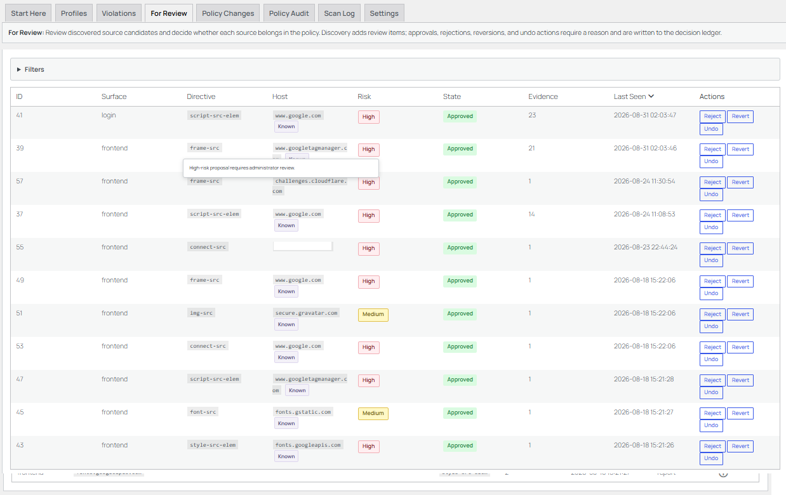
The For Review tab (Security Automation Manager -> CSP -> For Review), listing pending sources awaiting a decision.
Approval workflow
Use the approval workflow deliberately.
Approve when all are true
The host is expected.
The directive matches the use case.
The source is narrow enough.
The business or functional purpose is clear.
The risk is acceptable for the site.
Investigate when any are true
The source is linked to script, connection, form, frame, or worker execution.
The host is unfamiliar.
The same source appears after a recent plugin change.
The site owner has not approved the third-party service.
Reject or revert when any are true
The source is no longer needed.
The host looks like unwanted tracking.
The source was learned from a temporary test.
The proposal would broaden the policy without clear value.
Decision reasons
Decision reasons are required for approvals, rejections, reversions, and undo actions. Use short reasons such as required for checkout, theme font CDN, unknown host, or legacy tag removed. Reasons make the policy change ledger useful during later reviews.
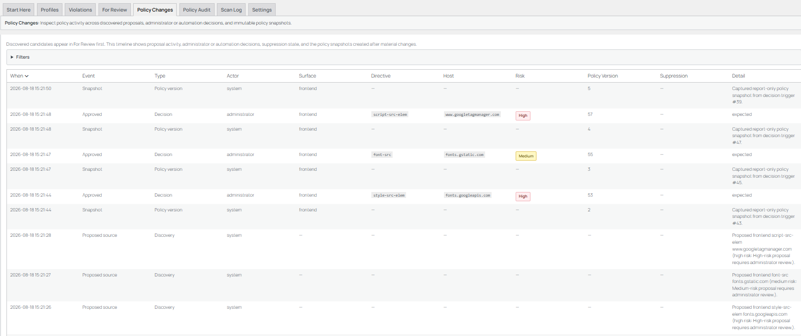
The Policy Changes tab (Security Automation Manager -> CSP -> Policy Changes), the append-only decision ledger.
Enforcement
Move to enforce mode only when the evidence supports it.
Each CSP surface can be report-only, enforce, or disabled. Enforcement should be staged. In most cases, start with the frontend surface, then consider login, API, and admin later.
Surface
Typical risk
Guidance
Frontend
Medium
Best first candidate. Test public pages, forms, checkout, embeds, and consent tools.
Login
Medium
Test normal login, password reset, MFA, SSO, and security plugins.
API
Variable
Relevant where browser-driven REST calls occur. Many static resources do not apply to API responses.
Admin
High
Use caution. Some WordPress admin screens and third-party plugins may emit inline code outside the normal script API.
Before enforcing
Recent violations have been resolved.
At least one source or hash is approved for the surface.
No active temporary override is present.
Rollback access is available.
After enforcing
Open key pages in a clean browser session.
Submit forms and test checkout or login.
Watch the Violations tab.
Return to report-only if required resources are blocked.
Rollback
Change the affected profile back to report-only.
Review blocked URIs and directives.
Approve only the sources that are actually required.
Test again before re-enforcing.
Ongoing use
Use the plugin after normal site changes.
CSP is not a one-off task. WordPress sites change when plugins update, themes change, tracking tags are added, forms are altered, payment integrations change, or content editors embed third-party resources.
After meaningful changes, run a manual scan and use report-only evidence before adding new approvals. Keep the policy narrow and documented. The other eleven pillars need no ongoing attention once set -- revisit them only if the site's framing, referrer, cross-origin, or browser-feature needs change. Strict-Transport-Security is one exception worth remembering: raising its Max-Age is easy to revisit, but browsers that already cached a long Max-Age keep enforcing HTTPS-only for that long even after you lower or remove the setting. Cross-Origin-Opener-Policy and Cross-Origin-Embedder-Policy are the other exception: revisit them whenever a new third-party embed, popup-based login, or payment flow is added to the site, since either header can silently break one that used to work.
Good operating habit
Review For Review and Violations after each release or plugin update. Treat new high-risk proposals as a change-control item.
Avoid broad exceptions
A quick broad allowlist may fix a symptom but can weaken the policy. Prefer narrow hosts and clear decision reasons.
The other eleven pillars
X-Frame-Options, X-Content-Type-Options, Referrer-Policy, Permissions-Policy, Strict-Transport-Security, Cache-Control, Information Masking, and the four cross-origin/legacy headers.
Everything above this section is about CSP, which is deliberately the most involved pillar: report-only rollout, discovery, risk-ranked approvals, and staged enforcement. Nine of the other eleven pillars don't work that way at all -- each is a direct per-surface configuration change with no learning phase: pick a value in the WordPress admin and the header is sent (or removed) on the very next request that matches that surface. Cross-Origin-Opener-Policy and Cross-Origin-Embedder-Policy have their own narrower Report-Only mode instead: a per-surface Disabled/Report-Only/Enforce selector plus a table of violations observed over the last 7 days. None of the eleven have a discovery workflow or automation.
Pillar
Admin location
What you configure
X-Frame-Options
Security Automation Manager -> X-Frame-Options
Per surface: DENY, SAMEORIGIN, or leave the header unsent. CSP's frame-ancestors directive supersedes this header in browsers that support it; this is a fallback for browsers that don't.
Per surface: on or off. nosniff is the only defined value, so there's nothing else to choose.
Referrer-Policy
Security Automation Manager -> Referrer-Policy
Per surface: one of the eight standard tokens. strict-origin-when-cross-origin is the recommended default and is pre-selected.
Permissions-Policy
Security Automation Manager -> Permissions-Policy
Per surface, per browser feature (geolocation, camera, microphone, fullscreen, payment, usb, autoplay): None, Self, or All. A feature left at its default isn't mentioned in the header, so the browser's own default policy applies to it.
Per surface: Max-Age, Include Subdomains, and Preload. Only sent over HTTPS requests. Preload can't be selected until Max-Age is at least 1 year and Include Subdomains is on -- the minimum hstspreload.org requires for submission.
Per surface: Same-Site, Same-Origin, or Cross-Origin. Controls which other sites may load this site's own resources cross-origin. Low risk -- it doesn't affect what this site can embed from elsewhere.
Per surface: Unsafe-None, Same-Origin, or Same-Origin-Allow-Popups. Isolates this site's browsing context from cross-origin windows it opens or is opened by.
Per surface: None, Master-Only, By-Content-Type, or All. A legacy Flash/Acrobat-era header; None is almost always correct for a modern site.
Cache-Control
Security Automation Manager -> Cache-Control
Per surface: one of four presets -- No-Store, Private/No-Cache, Public/Short (5 minutes), or Public/Long (1 hour). Unlike every other simple pillar, disabled by default -- see the callout below. Automatically defers to a detected caching plugin or CDN instead of sending a competing value.
Information Masking
Security Automation Manager -> Information Masking
Per surface: on or off, nothing else to choose -- same shape as X-Content-Type-Options. Removes the X-Powered-By (PHP version) and X-Pingback (this site's own XML-RPC URL) headers, and attempts to remove Server (web server name/version). Server removal is best-effort -- many hosts set it before PHP ever runs -- so the admin page includes a live self-probe reporting whether it actually took effect on this install.
Nothing to roll out
Except for Cross-Origin-Opener-Policy and Cross-Origin-Embedder-Policy's own Report-Only mode (see above), these headers are either sent exactly as configured or not sent at all, with no equivalent of CSP's report-only mode to reason about. If a change causes unexpected behaviour, undo it the same way you made it: change the value back in the admin page.
Cache-Control isn't enabled by default
Every other simple pillar here ships enabled out of the box; Cache-Control doesn't. It's a performance/caching-behaviour decision rather than a universal hardening default -- WordPress core already sends a safe, strict Cache-Control on wp-admin and wp-login.php, and pre-enabling this pillar could silently change your site's frontend caching behaviour on upgrade. If a caching plugin or CDN is already active when you do enable it, this plugin defers to that instead of sending a competing value.
Test after changing X-Frame-Options or Permissions-Policy
DENY on X-Frame-Options stops the site being framed anywhere, including by tools you may rely on (page builders with a preview iframe, some caching or testing services). Setting a Permissions-Policy feature to None disables it even where a plugin genuinely needs it (e.g. a booking widget that uses geolocation). Check the relevant page still works after changing either.
Strict-Transport-Security is sticky -- unlike the others
Once a browser receives this header, it remembers Max-Age and refuses plain-HTTP connections to this site for that long, even if you disable the header afterward -- browsers that already cached the policy don't find out you changed your mind until it naturally expires. Start with a short Max-Age while confirming every surface, subdomain, and asset genuinely works over HTTPS, then increase it once confident. Preload goes further still: once a domain is on browsers' built-in preload lists, removal can take months, so treat it as a one-way door.
Cross-Origin-Opener-Policy and Cross-Origin-Embedder-Policy carry real breakage risk
Setting Cross-Origin-Opener-Policy to Same-Origin severs window.opener access from any cross-origin popup this site opens or is opened by -- including popup-based OAuth/SSO login and payment flows many sites depend on. Same-Origin-Allow-Popups keeps isolation while still permitting those popups to hold a restricted opener reference, and is what most sites that need popups actually want. Cross-Origin-Embedder-Policy's Require-Corp is stricter still: it blocks any cross-origin subresource (fonts, embeds, ad tags, CDN-hosted assets) that doesn't explicitly opt in via a matching Cross-Origin-Resource-Policy header or CORS, and most third-party embeds don't opt in by default -- so enabling it carelessly can silently break unrelated page content rather than produce an obvious error. Credentialless is usually the safer enforcing value for Cross-Origin-Embedder-Policy. Both headers are only actually needed for sites that require cross-origin isolation (features like SharedArrayBuffer or high-resolution timers); most WordPress sites don't need either at Same-Origin/Require-Corp strength. The admin pages for both show this same warning above the picker.
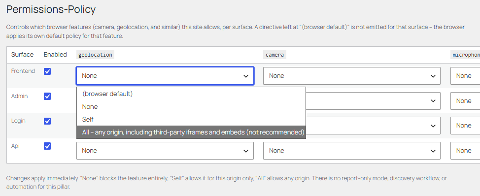
The Permissions-Policy page (Security Automation Manager -> Permissions-Policy), the most configurable of the nine simple pillars.
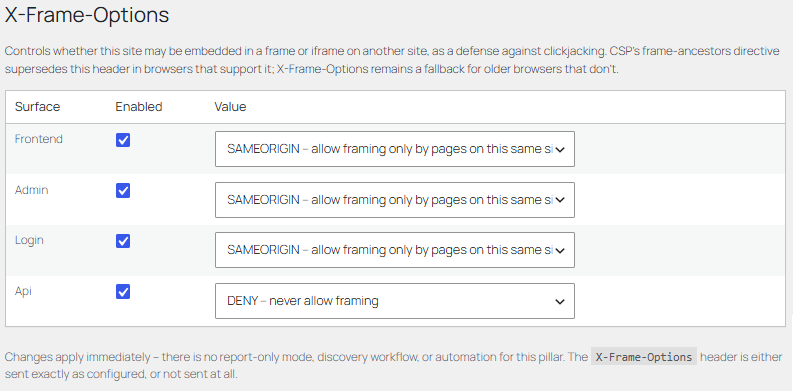
The X-Frame-Options page (Security Automation Manager -> X-Frame-Options).
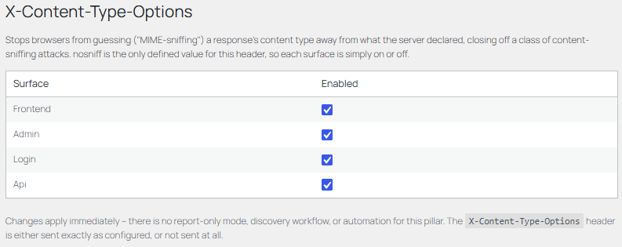
The X-Content-Type-Options page (Security Automation Manager -> X-Content-Type-Options) -- the simplest pillar: on or off, per surface.
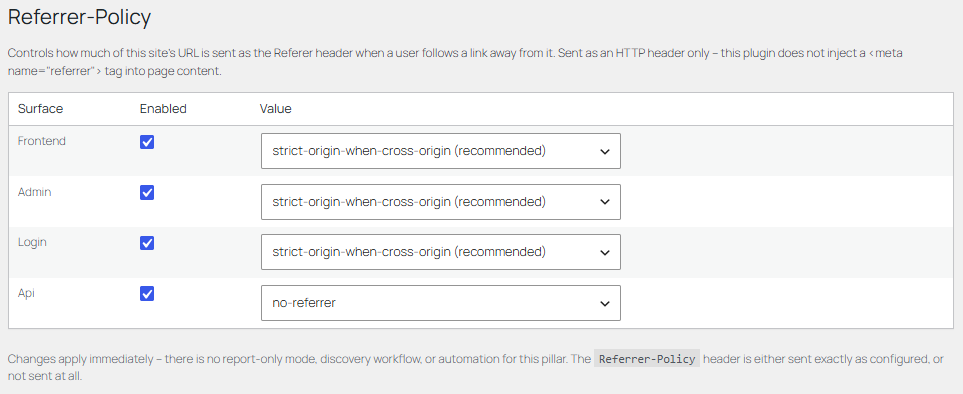
The Referrer-Policy page (Security Automation Manager -> Referrer-Policy), with strict-origin-when-cross-origin pre-selected as the recommended default.
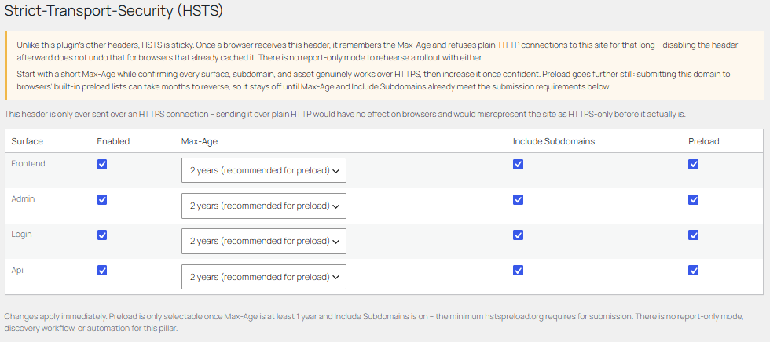
The Strict-Transport-Security page (Security Automation Manager -> Strict-Transport-Security), with the sticky-header warning shown above the controls.
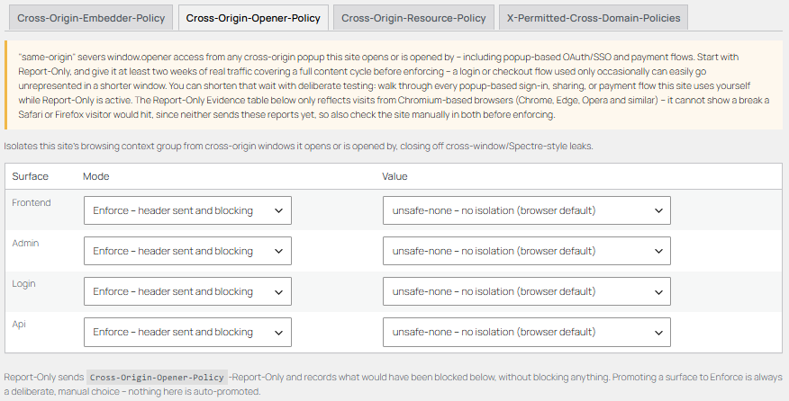
The Cross-Origin-Opener-Policy tab (Security Automation Manager -> Cross-Origin Policies), one of four tabs on that page alongside Cross-Origin-Embedder-Policy, Cross-Origin-Resource-Policy, and X-Permitted-Cross-Domain-Policies.
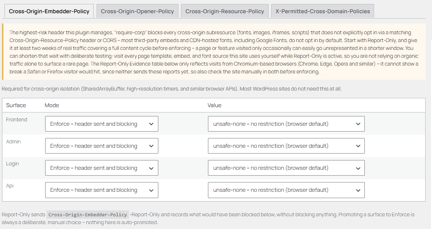
The Cross-Origin-Embedder-Policy tab, flagged in-admin as the highest-risk header this plugin manages.
All eleven pillars are free in every build -- there's no tier distinction here at all. The subscription only affects one specific CSP automation mode; see Automation tiers.
Content rewrite protections
Reverse Tabnabbing, External Scripts, and Internal Script Integrity.
None of these three are header pillars. Reverse Tabnabbing and External Scripts rewrite the rendered page itself; Internal Script Integrity instead adds an attribute to script/stylesheet tags as WordPress builds them, the same way this plugin's CSP nonce already does. All three are free, and all three fail open: any uncertainty leaves the page or tag untouched rather than risk breaking it.
Protection
Admin location
What it does
Reverse Tabnabbing
Security Automation Manager -> Reverse Tabnabbing
Per surface: on or off. Adds rel="noopener" to any target="_blank" link missing noopener/noreferrer, closing off window.opener access a new tab could otherwise use to redirect the original tab to a phishing page. Purely additive -- it never removes anything or breaks a link.
Per surface: on/off plus Report-only or Enforce mode. Inventories third-party <script>/stylesheet origins from real page loads, lets you classify each one, and supports Subresource Integrity (SRI).
Per surface: on or off, nothing else to configure. Automatically adds a Subresource Integrity hash to your own theme/plugin/core <script>/stylesheet tags. The hash is read from the exact local file this site is about to serve -- never a network fetch -- and recalculated the next time that file is served after it changes.
External Scripts follows the same report-first shape as CSP: a newly discovered origin is always Unclassified -- never blocked by default. Report mode (the default) only builds the inventory. Enforce mode still only ever removes an origin you explicitly marked Blocked, or an Approved -- immutable origin whose SRI hash no longer matches what the page actually served.
This plugin never fabricates an SRI hash
"Approved -- immutable" only ever compares against a hash you paste in yourself -- from a local copy of the file you already trust, or the vendor's own published hash -- never one this plugin computes by fetching the remote URL itself. If a provider's script changes behind a stable URL (common for tag managers, analytics, and similar mutable services), classify it Approved -- mutable provider instead; SRI genuinely doesn't apply there.
Deduplication stays at the origin level
Each row is keyed by scheme and host, so a CDN serving content-hashed filenames still collapses to one row per origin instead of a permanent row per file variant. The most recently observed full URL (path and query included) is also kept alongside it, so the "Suggest" hash helper -- which needs an exact file to fetch and hash -- doesn't require you to already know or go find that URL yourself. If a script URL's query string could contain something sensitive, be aware it may be retained in this field.
Internal Script Integrity is a different trust model entirely
Because the hash comes from a local file read rather than a remote fetch, there's no third-party origin to trust and nothing to classify or approve -- turn it on for a surface and every first-party script/stylesheet tag on that surface gets a correct, always-current integrity attribute.
The External tab (Security Automation Manager -> Scripts -> External), where third-party script/stylesheet origins are classified.
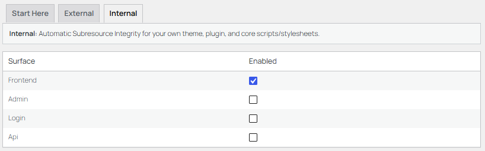
The Internal tab (Security Automation Manager -> Scripts -> Internal) -- nothing to classify, just an on/off toggle per surface.
TLS certificates
Automatic certificates via ACME (Let's Encrypt).
Security Automation Manager can request, validate, and renew TLS certificates from Let's Encrypt -- or any RFC 8555 ACME v2 directory -- entirely from inside WordPress: no shell access, no certbot, no separate daemon. This is a distinct feature from the ten header pillars above; it's the "transport and certificate trust" layer of the plugin's own defence-in-depth model, sitting underneath everything else. It's free in every build, with no automation tier or subscription involved anywhere in it.
1. Account & order
An ACME account key is generated on first use and registered with the CA. One order covers every domain listed; the first becomes the certificate's Common Name, the rest are Subject Alternative Names.
2. Prove control
The CA demands proof you control each domain, satisfied via a DNS-01 or HTTP-01 challenge -- see below.
3. Generate or supply a key
Automatic on capable hosts (ECDSA P-256 recommended, RSA 2048 for legacy compatibility). If a server genuinely can't generate one, paste your own PEM key instead.
4. Issue & store
The finalised certificate and private key are stored encrypted at rest (sodium secretbox), ready for the Install step.
5. Renew automatically
Checked daily via WP-Cron; production certificates re-issue inside the 30-day window before expiry. Staging certificates are never auto-renewed.
DNS-01 or HTTP-01
Challenge
Proves control via
Wildcards
Needs
DNS-01 (preferred)
A short-lived _acme-challenge TXT record, created and removed automatically through your DNS provider's API.
Yes
A supported DNS provider, or a generic mechanism (see below).
HTTP-01 (automatic fallback)
A file this site serves itself over plain HTTP on port 80.
No
Nothing extra -- but the CA must be able to reach this site on port 80. HSTS doesn't interfere: Let's Encrypt starts at http:// and follows the redirect to HTTPS, the same as any browser.
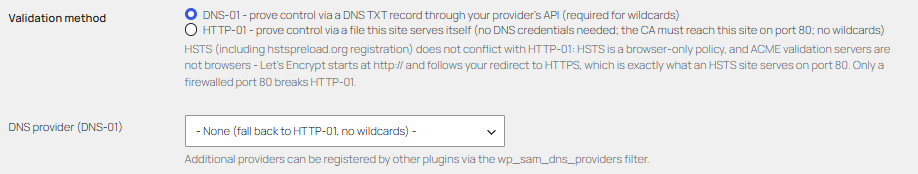
Validation method, on the Configuration tab (Security Automation Manager -> Certificates).
41 DNS providers ship built in -- AWS Route 53, Cloudflare, Google Cloud DNS, Azure DNS, DigitalOcean, GoDaddy, Namecheap, OVH, and many more -- plus two provider-agnostic mechanisms: acme-dns (a one-time CNAME delegation that works with literally any DNS provider, including ones with no API at all) and RFC 2136 dynamic updates (TSIG-signed, for self-hosted authoritative servers like BIND, Knot, or Windows Server DNS). Additional providers can be registered by other plugins via the wp_sam_dns_providers filter.
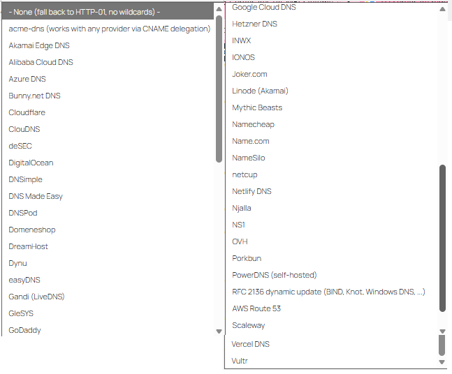
The DNS provider dropdown -- every built-in provider in one alphabetical list.
DNS API credentials are domain-takeover-grade secrets
Use the narrowest token scope your provider offers (a zone-specific or DNS-only token, never a full account key) -- whoever holds it can redirect your domain's traffic anywhere. Credentials are stored encrypted at rest via sodium secretbox.
Key type and certificate details
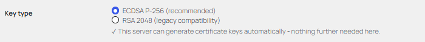
Key type, with a live capability check -- if a server genuinely can't generate keys, this section is replaced with a paste-your-own-key box instead.
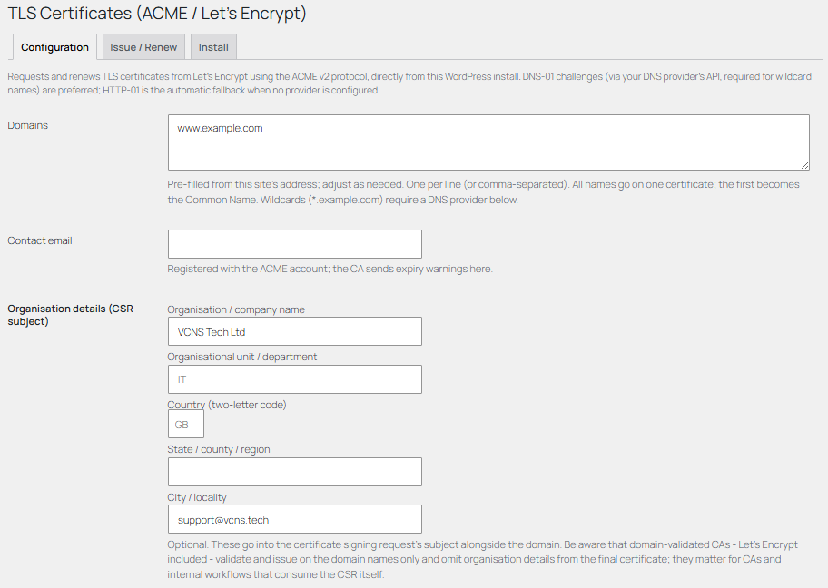
The rest of the Configuration tab: domains (pre-filled from this site's own address), contact email, and optional CSR organisation details. Domain-validated CAs like Let's Encrypt validate and issue on the domain names only -- organisation details matter for CAs and internal workflows that consume the CSR itself, not for what Let's Encrypt actually issues.
Staging first
Keep the Let's Encrypt STAGING directory on until an order succeeds end-to-end. Staging certificates aren't trusted by browsers, but the rate limits are generous -- production allows only 5 duplicate certificates per week.
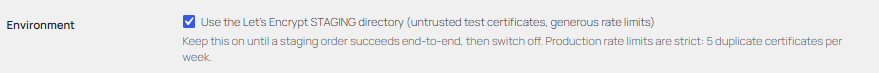
Environment, on the Configuration tab.
Issue, renew, and install
The Issue/Renew tab shows the latest certificate's domains, environment, and expiry, plus the most recent run's outcome, and has the manual "Issue / Renew Now" button. A failed run -- from either a manual click or the daily WP-Cron renewal check -- shows here immediately and also raises a site-wide admin notice until a later run succeeds, so a quietly failing renewal can't go unnoticed until the certificate actually expires.
Issuing happens entirely inside WordPress; installing the result into the web server depends on the hosting platform, so the Install tab offers three deployment modes:
Deployment
What happens
Best for
Manual download
No automatic installation. Download fullchain.pem and privkey.pem and install them yourself.
Any host, as a fallback that always works.
Export to a directory
Writes both PEM files to an absolute path outside the web root on every issue and renewal, for a host-side script to pick up.
Hosts without a control-panel API, where you (or your host) can run a small install script.
cPanel UAPI install_ssl
Installs the certificate automatically via cPanel's API.
cPanel hosting with API token access.
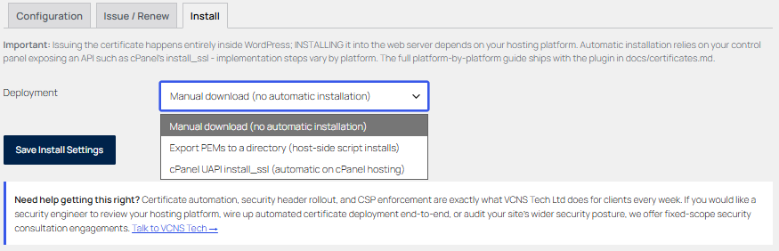
The Install tab (Security Automation Manager -> Certificates -> Install).
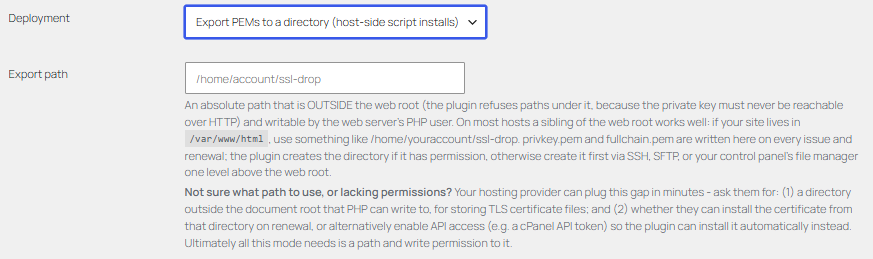
Export to a directory -- the plugin refuses any path under the web root, since the private key must never be reachable over HTTP.
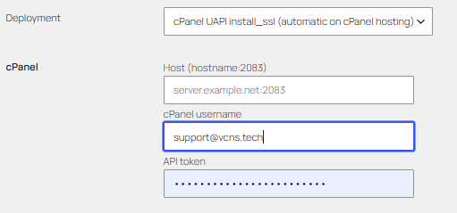
cPanel UAPI install_ssl -- host, username, and API token.
Automatic installation is necessarily platform-specific -- the full platform-by-platform guide ships with the plugin as docs/certificates.md. Once a certificate is actually installed and served, pair it with Strict-Transport-Security to tell browsers to insist on HTTPS for this site going forward.
Automation & subscription tiers
Which CSP automation is free, and which is paid.
CSP's automation mode controls how much administrator review a surface skips when the deterministic engine evaluates a proposed source. There are four modes, set per surface. Three are free in every build. The fourth -- Fully Automatic -- requires an active paid subscription.
ManualFree
Every proposal, at every risk level, waits for an administrator decision. The default for new profiles.
Automatic, medium+high approvalsFree
Low-risk proposals are approved automatically. Medium and high-risk proposals still require a decision.
Automatic, high approvals onlyFree
Low and medium-risk proposals are approved automatically. Only high-risk proposals still require a decision.
Fully AutomaticPaid
Low, medium, and high-risk proposals are all approved automatically within the deterministic engine's hard safety exclusions. Nothing below that ceiling waits for a human. Requires an active subscription: £1.99/month or £19.99/year.
flowchart TD
A["New source proposal"] --> B{"Surface's automation mode"}
B -->|"Manual"| C["Stays pending"]
B -->|"Auto: medium+high approvals"| D{"Risk = low?"}
D -->|"Yes"| E["Auto-approved"]
D -->|"No"| C
B -->|"Auto: high approvals only"| F{"Risk = low or medium?"}
F -->|"Yes"| E
F -->|"No"| C
B -->|"Fully Automatic selected"| G{"Active subscription?"}
G -->|"Yes"| H{"Risk = low, medium, or high?"}
H -->|"Yes"| E
H -->|"No"| C
G -->|"No -- treated as High approvals only"| F
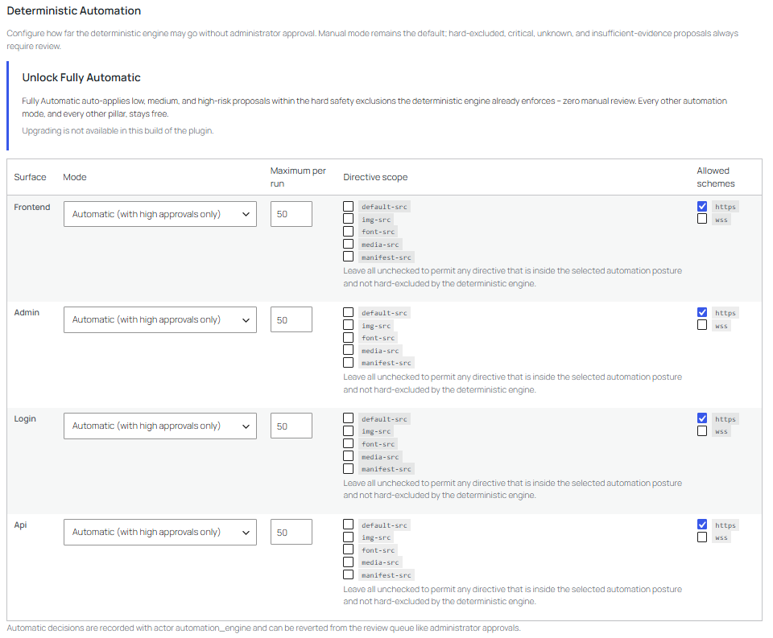
The Deterministic Automation table on the Settings tab. This WordPress.org build has no active entitlement, so Fully Automatic shows "Upgrading is not available in this build of the plugin" instead of an Upgrade button.
What happens without a subscription
Selecting Fully Automatic on a surface without an active entitlement doesn't fail loudly -- the surface is quietly kept on Automatic (high approvals only) instead, and the Settings tab shows "(requires upgrade)" next to the option. This also applies if a subscription lapses after Fully Automatic was already selected: the next evaluation falls back to High Approvals automatically, it doesn't keep auto-applying everything.
Upgrading
Where an upgrade path is available in your build, an Upgrade button appears next to the automation setting on the CSP Settings tab, alongside a billing-interval choice (monthly or annual), and starts a checkout flow for a recurring subscription. Every other feature described in this guide -- all twelve pillars, three of the four automation modes, discovery, violation reporting, and policy-change review -- is free and local regardless of subscription status.
Troubleshooting
Common faults and what to check.
Problem
Likely cause
Action
Site breaks after enforce mode.
A required resource is not approved.
Return the affected surface to report-only. Review Violations, approve required narrow sources, then retest.
Enforce button is blocked.
The promotion gate has not passed.
Check for approved inventory, recent violations, and temporary overrides.
Manual scan finds little or nothing.
The activity is runtime behaviour rather than static HTML.
Browse the site in report-only mode and rely on violation reports for fetch, XHR, WebSocket, EventSource, and workers.
No violation reports arrive.
The public site URL differs from the WordPress REST URL, or the configured reporting server URL does not route back to the plugin endpoint.
Open Settings and either use the current site endpoint button or set the public HTTPS reporting URL that reaches /wp-json/sam/v1/report.
Repeated unknown host appears.
A plugin, theme, injected tag, or external script is generating it.
Trace the source owner before approval. Reject if not required.
A page can no longer be embedded in an iframe elsewhere.
X-Frame-Options is set to DENY or SAMEORIGIN for that surface.
Open Security Automation Manager -> X-Frame-Options and relax or disable it for the affected surface.
A feature (camera, geolocation, and similar) stopped working for a plugin.
Permissions-Policy is set to None for that feature on that surface.
Open Security Automation Manager -> Permissions-Policy and set the feature to Self or All for the affected surface.
A surface selected as Fully Automatic shows as "Automatic (high approvals only)" instead.
No active subscription is entitled on this site, or Fully Automatic isn't available in this build.
This is expected, not a bug -- see Automation tiers. Use the Upgrade button on the Settings tab where available.
The Upgrade button doesn't appear, or says upgrading isn't available.
This build doesn't include the checkout integration.
Every other feature still works normally; Fully Automatic specifically isn't reachable from this build.
Glossary
Quick reference: CSP directives.
default-src
Fallback directive used by browsers when a more specific directive is absent.
script-src
Controls script execution and script source loading.
style-src
Controls style loading and inline style behaviour.
img-src
Controls image sources.
font-src
Controls web font sources.
connect-src
Controls fetch, XHR, WebSocket, EventSource, and similar runtime connections.
frame-src
Controls what can be embedded in frames.
form-action
Controls where forms may submit.
report-to
Reporting API group name used with the Reporting-Endpoints header.
Fingerprint
A stable identifier for a surface, directive, and host decision.